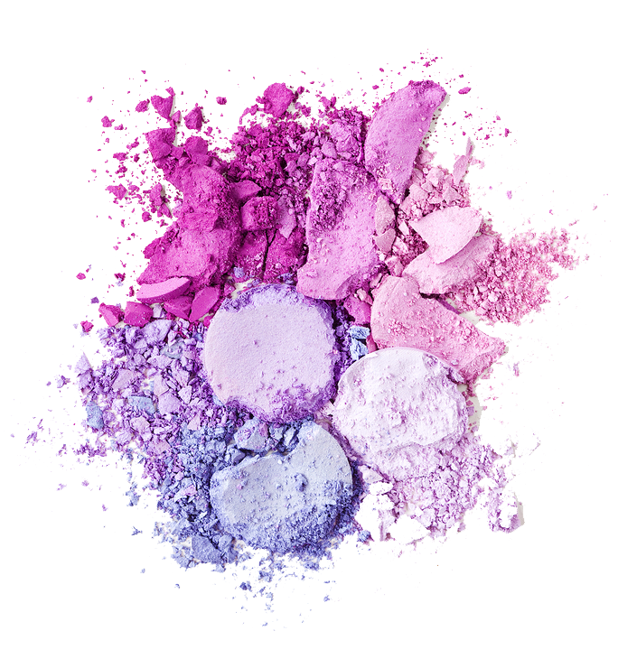
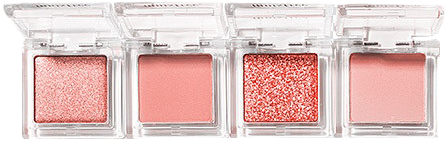
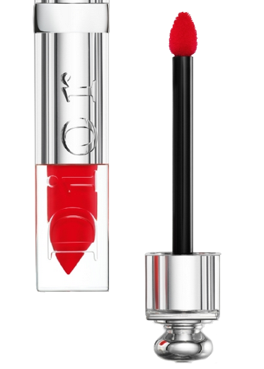
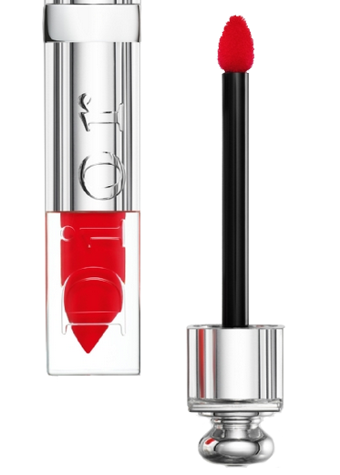
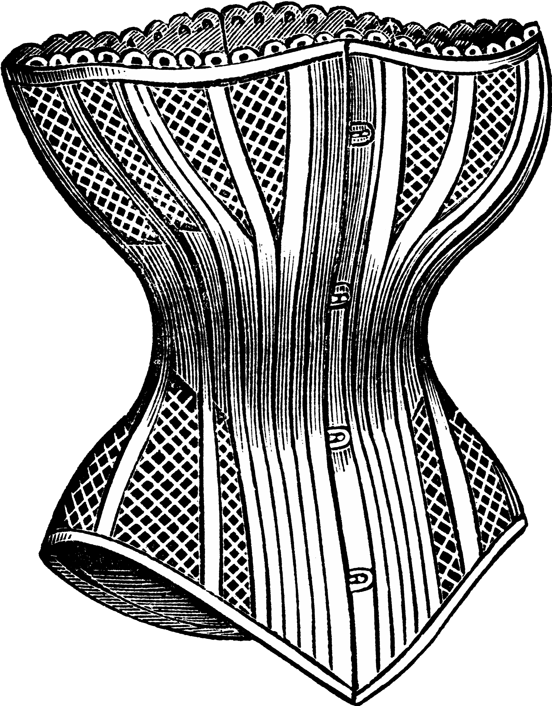
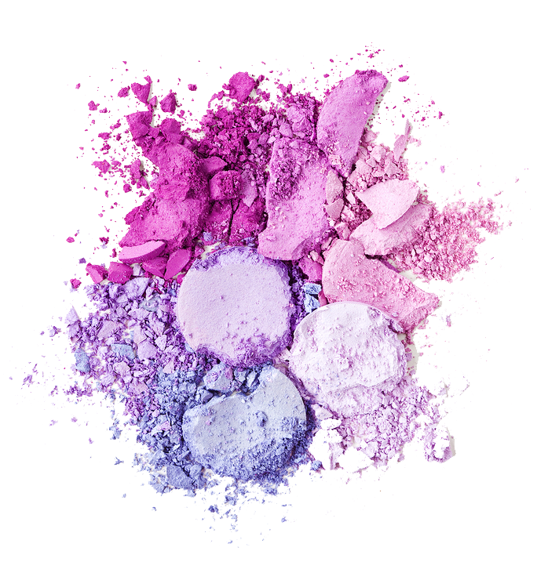
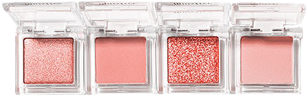
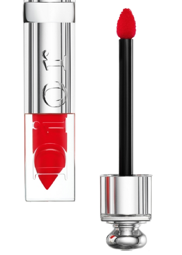

화장품은 필요 이상으로 상품을 구매하도록 짜여진 소비사회의 대표적 공산품이다.
화장은 얼굴의 체계를 만들고, 얼굴을 모델에 따라 대량 생산한다.
성 상품화와 소비사회의 강요된 미의 전형과 관련이 있으며 이미지와 가호에 의해 표시된 것으로,
미의 기표가 계산되고 그 계산에 따라 구성된 미를 가공하며
끊임없이 유행을 만들고 새로운 현실 원칙을 생산한다.
  

탈 코르셋
: 꾸미지 않을 자유
코르셋
여성의 몸매를 날씬하게 만들기 위해 고정하는 속옷이다.
페미니즘 용어로 사용될 때는 화장, 날씬한 몸매, 제모, 긴 머리 등
여성에게만 강요되는 외모 기준을 상징한다.
여성성
?
“‘부모’, ‘봉황’, ‘신사 숙녀 여러분!’과 같이 좋은 것은 주로 남자 쪽이 먼저 나오지만,
‘암수’, ‘연놈’과 같이 나쁜 것은 주로 여자 쪽이 먼저 나오는 것은
남녀를 차별해 온 우리 사회의 폐습을 반영하는 것으로 볼 만하다.”
된장녀
김치녀
메갈년
과일 좀 깎아라
커피 좀 타와라
밥 좀 차려봐라
화장 좀 하고 다녀라
화장하는 법 좀 배워라
여자애가 피부 관리 좀 해야지
여자애 방이 그게 뭐냐
여자애가 조신하지 못하게
암탉이 울면 집안이 망한다고
어디 여자가 그런 일을 하려고 해
여자 직업에 이 정도면 돈 많이 받지
여자는 좋은 남자 만나는게 가장 좋은 인생이지
여자가 담배피면 애한테 안 좋지
너는 살만 빼면 좀 예쁠 것 같은데
쌍수 안하니?
여자애 옷차림이 그게 뭐니
어디 남자하는 일에 여자가 감히
여자의 적은 여자
여자치고 게임 잘하시네요
여자인데 탱커하시네요?
걔는 줘도 안먹는다
너 혹시 브라 안했니?
여대 가면 시집 잘간대
여자 나이는 계란 한판
넌 성형 안하니?
여자애가 많이 먹네
화장품은 필요 이상으로 상품을 구매하도록 짜여진 소비사회의 대표적 공산품이다.
화장은 얼굴의 체계를 만들고, 얼굴을 모델에 따라 대량 생산한다.
성 상품화와 소비사회의 강요된 미의 전형과 관련이 있으며 이미지와 가호에 의해 표시된 것으로,
미의 기표가 계산되고 그 계산에 따라 구성된 미를 가공하며
끊임없이 유행을 만들고 새로운 현실 원칙을 생산한다.
 

“아니다!
나는 내가 꾸미고 싶어서 꾸민다!”
예쁜가?
아름다운가?
우리는 항상 안예쁠 자유가 없는 곳에서 예쁠 자유를 먼저 찾는다.
흔히 말하는 「여장대회」에 나가는 남자들은 평소에 여성들이 입고 다니는 원피스, 치마. 혹은 우스꽝스러운 화장을 하고 나온다.
「여장」을 한 남자들은 여성 연예인들이 취하는 요염한 포즈를 우스꽝스럽게 따라하고, 관중들을 이를 보며 웃는다.
그들도 아는 것이다.
이런 옷차림과 꾸밈은 인간다운 것이 아니며 철저히 대상화되기 위한 행동이라는 것을.
“맙소사, 꾸밀 자유라니.
그건 자유가 아니라 기만이지...”
《탈코일기》
코르셋은
대물림
대물림 된다.
대학생 고예리(20)씨는 교회에서
만난 여중생들이 자신의
화장에 대해
‘품평회’를
하는 모습에
충격을 받고
탈코르셋 운동을
시작했다. 화장이
여성만의 전유물로 인식되며
어린 여중생들에게까지 대물림되고
있다는 생각이 들었기 때문이다.
서울 지하철 이수역 주변의 한 주점에서 벌어진 이른바 ‘이수역 폭행사건’이 논란이 되고 있습니다. 경찰은 남성 3명과 여성 2명을 쌍방폭행으로 입건했는데요. 양측의 주장이 엇갈리고 있습니다. 여성 일행은 머리뼈가 보일 정도로 맞았다면서 붕대를 감은 사진을 한 사이트에 올렸습니다. 사건 당시에 옆 테이블의 커플과 시비가 붙었는데 아무런 관계가 없는 남성 일행으로부터 남성혐오 사이트, 메갈의 회원을 처음 본다, 얼굴이 왜 그러냐 등의 폭언을 듣고 폭행까지 당했다고 주장했습니다. 여성들의 지인 역시 화장을 하지 않고 머리가 짧다는 이유로 폭행을 당했다고 주장했습니다. 반면에 남성들은 이 여성 일행이 주점에서 시끄럽게 떠들어서 조용히 해달라고 했는데 먼저 시비를 걸었다고 주장했습니다. 한편, 여성 일행과 먼저 시비가 붙은 커플이라고 주장하는 누리꾼 역시 인터넷에 글을 올렸는데요. 남자친구와 술을 마시고 있었는데 여성 일행이 먼저 남성혐오 용어인 '흉자·한남커플'이라는 말로 조롱을 했다'고 주장했습니다. 경찰은 오늘(15일)부터 양쪽 모두를 소환 조사하고 CCTV와 휴대전화 동영상을 분석하면서 본격적인 수사에 나섰는데요. 청와대 국민청원 게시판에는 하루 만에 30만 명 넘는 사람들이 청원에 참여했습니다.
2018. 11. 15.
"여자들이 먼저 잘못한거 아니냐"
"여자들이 맞을 짓 했네"
"양쪽 상황을 모두 들어봐야..."
"여자들 말은 다 거짓말, 주작."
그들이 우리를 "여자"가 아닌 "사람"으로 볼 수 있도록.
참고자료
https://www.bbc.com/korean/news-44329328
http://www.koreadaily.com/news/read.asp?art_id=6253978
https://youtu.be/qSVnmliwbtg
〈‘핫팬츠’와 ‘한뼘바지’의 차이〉《쉼표, 마침표 15호》
《까다로운 대상 – 2000년 이후 한국 현대미술》
《탈코일기》